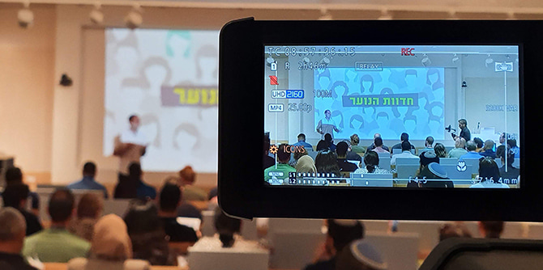
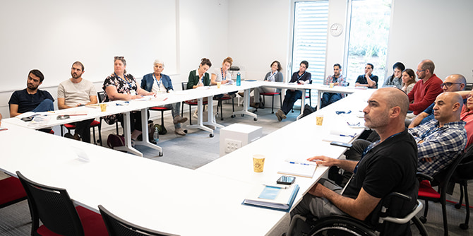
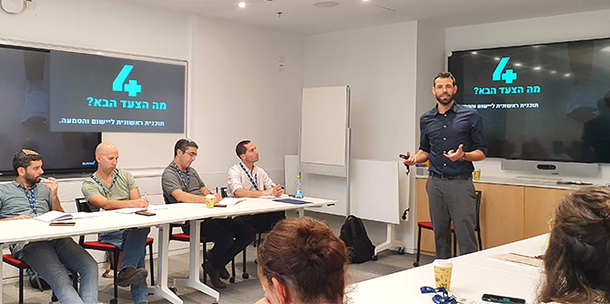

 כנס הבוגרות והבוגרים של תוכנית מנדל למנהיגות נוער (צילום: מירב עוזיאל)
בסוף חודש אוקטובר 2022 עצרו את שגרת יומם כ-100 בוגרי ובוגרות תוכנית מנדל למנהיגות נוער מכ-65 ארגונים שונים מליבת החינוך הבלתי פורמלי – אנשי מפתח בתפקידים מגוונים בתנועות נוער ובארגוני נוער, ברשויות מקומיות ובמכינות קדם-צבאיות, בעלי מעוף ומוטיבציה לייצר שינוי במציאות החינוכית של החברה הישראלית. את הכנס, שכותרתו "חדוות הנוער: חיבורים. למידה. אקוסיסטם" הובילו צוות התוכנית ונציגי הבוגרים והבוגרות.
מנהל תוכנית מנדל למנהיגות נוער,
דני רוזנר, הציג סקירה מבוססת-מחקר של שדה החינוך הבלתי פורמלי ואתגריו וכן הצביע על כוחם של הבוגרים במענה משותף לאתגרים אלו. "אנחנו מאמינים בנוער. לחינוך הבלתי פורמלי תוצרים מוכחים: חלקו עוסק בלמידה, בקידום מוביליות, בפיתוח ובהעצמה אישית, בשיפור יכולות חברתיות, בשיפור הישגים לימודיים ואקלים, בהנחלת ערכים ומוסר, בתחושת עצמאות וביטחון עצמי, בלקיחת אחריות אישית ומעורבות אזרחית, במניעת התנהגויות סיכון וכו'. במציאות הנוכחית, 30% מבני הנוער משתתפים בפעילות בלתי פורמלית, 25,000 מקבלי שכר בארגוני מגזר שלישי ו-2% מתקציב המדינה מיועד לפעילות", אמר רוזנר בדברי הפתיחה.
חינוך בלתי פורמלי: מבחן בגרות – סקירה של דני רוזנר, מנהל תוכנית מנדל למנהיגות נוער
"ישנם 4 אתגרים מרכזיים בשדה החינוך הבלתי פורמלי: היעדר הכשרה מקצועית ושיטתית לעובדים בו; 'פעילות בעלות' – המרחב פתוח לאלו היכולים לשלם עבורה, ועל כן אינו נגיש לכולם; מרחב שמחייב התחדשות, רלוונטיות והתמודדות עם אתגרי ההווה; ואילו האתגר האחרון מתייחס ליכולת השדה לעבוד ולפעול יחד", הוסיף רוזנר.
הכנס התקיים בבית קרן מנדל בירושלים וכלל מפגשי מחזור של בוגרי התוכנית לאורך השנים – דבר שתרם לחיבור המחודש של קבוצת העמיתים שנבנתה במהלך שנת הלימודים במכון. מטרתו הייתה להניח תשתית לבניית קהילה מגוונת של מנהיגות ומנהיגים משדה החינוך הבלתי פורמלי הפועלים באפקטיביות, יחד ולחוד, לחיזוק הסולידריות ולקידום מוביליות חברתית. במהלך הכנס נערכו סדנאות מומחים בנושאי ליבה משולחן העבודה של הבוגרים: גיוס כוח אדם בעידן הנוכחי; גיוס שותפויות לטיוב הפעולה בשדה; זיהוי וחיזוק החוסן בקרב צוותי חינוך ועוד. הסדנאות היוו תשתית ללמידה, לשיח על אתגרים משותפים וליצירת מוטיבציה להמשיך ולעסוק יחד בנושאים אלו.

חיזוק חיבורים בין-אישיים ויצירת שינוי במציאות החינוכית בישראל (צילום: סימנים)
לבוגרים היה חלק משמעותי בהובלת היום, ורבים מהם הציגו רעיונות ומיזמים פורצי דרך בחינוך הבלתי פורמלי. הבוגרים והבוגרות פגשו לשיח משותף את דני ולעל, בוגר מחזור ב' ומנכ"ל מרכז מעשה, לשיח על מוביליות ככלי עבודה; נטע סיזל, בוגרת מחזור ב' ומזכ"לית האיחוד החקלאי, הציגה את המסע כמודל חינוכי; פלג לוינזון, בוגר מחזור ו', ושלמה שורץ, בוגר מחזור ד', סיפרו איך מייצרים שלם חינוכי בין המערכת הפורמלית לבלתי פורמלית; על התמודדות עם מצבי חירום יכלו הבוגרים ללמוד מרועי יסוד, חבר "דרור ישראל" ובוגר תוכנית הפיילוט למנהיגי תנועות הנוער; גיא זוזות, בוגר מחזור ו' ומנהל "בית דני", שיתף איך הופכים את הנוער לחלק מהקהילה ומייצרים יחד איתו מענים שמותאמים לו. אלו העוסקים בתחום הנוער בחברה שמרנית ומסורתית יכלו ללמוד מחיתאם אבו בדר, בוגרת מחזור ו' ומנהלת תוכנית "ראידת" ב"כוכבי המדבר", על תוכנית מנהיגות לנשים בחברה הבדואית; ומודל חדש לבטיחות ולניהול סיכונים בארגוני החינוך הבלתי פורמלי הוצג על-ידי ערן זהר, בוגר מחזור ג' המלווה ארגונים בתחומי שטח ובטיחות. כל אחד מהנושאים פתח צוהר לרעיון שאפשר לממש בכל אחד מהארגונים שאליהם משתייכים הבוגרים, ויתרה מכך, נוצרה ההבנה שהבוגרים והבוגרות הם מקור לידע וללמידה בנושאים מגוונים, ושבכל זמן נתון יש עם מי לחשוב, ללמוד ולקדם יוזמה בארגון.

סדנאות מומחים בנושאי ליבת העיסוק של הבוגרות והבוגרים (צילום: מירב עוזיאל)
בסיום היום פגשו הבוגרים והבוגרות את העיתונאי
גיא לרר, ששוחח עמם על הובלת מהפכות חברתיות דרך הרשת: "מהפכות גדולות מתחילות מפעולות קטנות של אנשים שמזהים אי-צדק בעולם", אמר לרר.
המפגשים שנוצרו במהלך הכנס היוו פלטפורמה להיכרות בין-אישית, להיכרות עם ארגונים שונים הפועלים באותה הזירה, ובעיקר להבנה כי למנהיגי החינוך הבלתי פורמלי – בוגרי תוכנית מנדל למנהיגות נוער – הכוח לשנות. הכנס חידד עבור הבוגרים את ההבנה שזירת החינוך הבלתי פורמלי רחבת היקף ושיש להמשיך ולחזק את הקשרים ושיתופי הפעולה, לייצר למידה ואקוסיסטם בין השותפים השונים ובעיקר לחזק את החיבורים לטובת פעולה אקטיבית בתחום החינוך בישראל בכלל ובחינוך הבלתי פורמלי בפרט.
כנס הבוגרות והבוגרים של תוכנית מנדל למנהיגות נוער, אוקטובר 2022
יחידת בוגרות ובוגרי מנדל שמה לעצמה למטרה להרחיב ולהעמיק את ההשפעה של הבוגרות והבוגרים של תוכניות הקרן על החברה בישראל, לייצר עבורם הזדמנויות ליצירת חיבורים ושיתופי פעולה מקצועיים ולהיות להם לבית מקצועי שבו יוכלו להמשיך לגבש את זהותם המקצועית והערכית, להתמודד עם אתגרים מורכבים ולהמשיך להתפתח כמנהיגות ומנהיגים מחוללי שינוי.
בסיום הכנס אמרה
ליאת כרמי, מובילת קהילת הבוגרים: "בוגרי תוכנית מנדל למנהיגות נוער הם נכס עבור החינוך הבלתי פורמלי, ההתמודדות בזירה דלת תקציב, עם כוח אדם צעיר ומתחלף באופן תדיר, מחייבת אותנו להיות יצירתיים, מקצועיים, ובעלי יכולת לראות בשיתופי פעולה מקור לעוצמה ולהעצמה של השדה החינוכי".
{kind=link}
{kind=link}
{kind=link}